10 Ограничения на применение регрессии
library(tidyverse)10.1 Основы регрессионного анализа
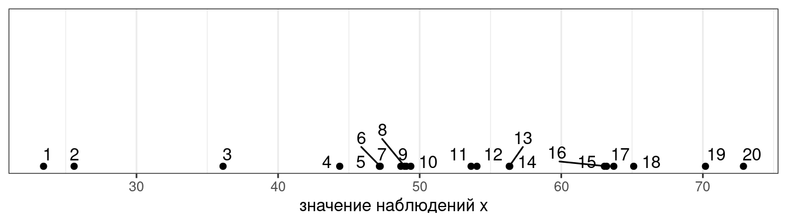
Когда мы используем регрессионный анализ, мы пытаемся оценить два параметра:
- свободный член (intercept) – значение \(y\) при \(x = 0\);
- угловой коэффициент (slope) – изменение \(y\) при изменении \(x\) на одну единицу.
\[y_i = \beta_0 + \beta_1\times x_i + \epsilon_i\]
Причем, иногда мы можем один или другой параметр считать равным нулю.
Определите по графику формулу синей прямой.
При этом, вне зависимости от статистической школы, у регрессии есть свои ограничения на применение:
- линейность связи между \(x\) и \(y\);
- нормальность распределение остатков \(\epsilon_i\);
- гомоскидастичность — равномерность распределения остатков на всем протяжении \(x\);
- независимость переменных;
- независимость наблюдений друг от друга.
10.2 Нелинейность взаимосвязи
Давайте восползуемся данными из пакета Rling Натальи Левшиной. В датасете 100 произвольно выбранных слов из проекта English Lexicon Project (Balota et al. 2007), их длина, среднее время реакции и частота в корпусе.
ldt <- read_csv("https://goo.gl/ToxfU6")
ldtДавайте посмотрим на простой график:
ldt %>%
ggplot(aes(Mean_RT, Freq))+
geom_point()+
theme_bw()
Регрессия на таких данных будет супер неиформативна:
ldt %>%
ggplot(aes(Mean_RT, Freq))+
geom_point()+
geom_smooth(method = "lm")+
theme_bw()
m1 <- summary(lm(Mean_RT~Freq, data = ldt))
m1
Call:
lm(formula = Mean_RT ~ Freq, data = ldt)
Residuals:
Min 1Q Median 3Q Max
-224.93 -85.42 -30.52 81.90 632.66
Coefficients:
Estimate Std. Error t value Pr(>|t|)
(Intercept) 826.998242 15.229783 54.301 < 0.0000000000000002 ***
Freq -0.005595 0.001486 -3.765 0.000284 ***
---
Signif. codes: 0 '***' 0.001 '**' 0.01 '*' 0.05 '.' 0.1 ' ' 1
Residual standard error: 143.9 on 98 degrees of freedom
Multiple R-squared: 0.1264, Adjusted R-squared: 0.1174
F-statistic: 14.17 on 1 and 98 DF, p-value: 0.000284310.2.1 Логарифмирование
ldt %>%
ggplot(aes(Mean_RT, log(Freq)))+
geom_point()+
geom_smooth(method = "lm")+
theme_bw()
ldt %>%
ggplot(aes(Mean_RT, log(Freq+1)))+
geom_point()+
geom_smooth(method = "lm")+
theme_bw()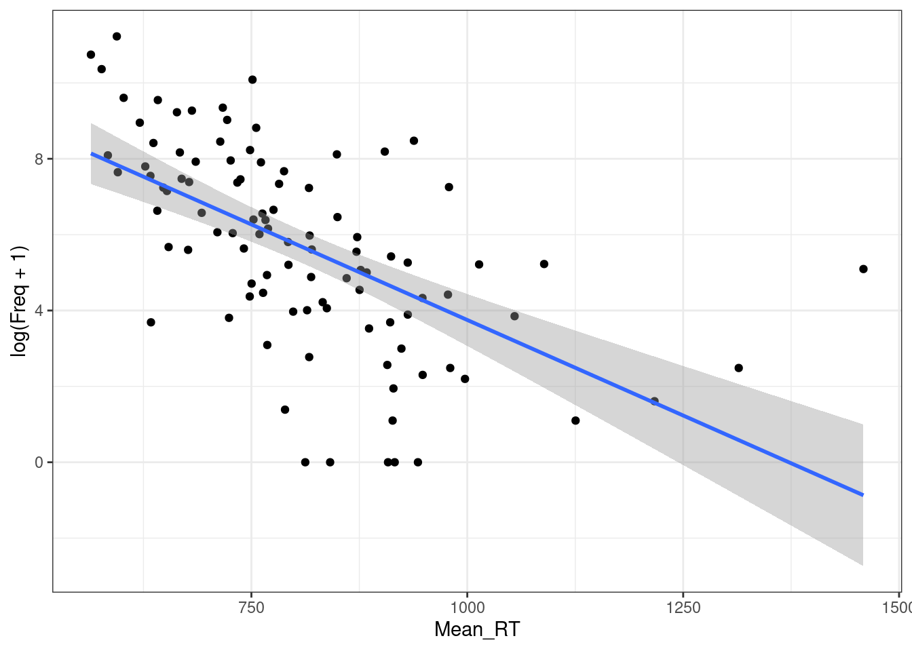
m2 <- summary(lm(Mean_RT~log(Freq+1), data = ldt))
m2
Call:
lm(formula = Mean_RT ~ log(Freq + 1), data = ldt)
Residuals:
Min 1Q Median 3Q Max
-242.36 -76.66 -17.49 48.64 630.49
Coefficients:
Estimate Std. Error t value Pr(>|t|)
(Intercept) 1001.60 29.79 33.627 < 0.0000000000000002 ***
log(Freq + 1) -34.03 4.76 -7.149 0.000000000158 ***
---
Signif. codes: 0 '***' 0.001 '**' 0.01 '*' 0.05 '.' 0.1 ' ' 1
Residual standard error: 124.8 on 98 degrees of freedom
Multiple R-squared: 0.3428, Adjusted R-squared: 0.3361
F-statistic: 51.11 on 1 and 98 DF, p-value: 0.0000000001576m1$adj.r.squared[1] 0.1174405m2$adj.r.squared[1] 0.336078Отлогорифмировать можно и другую переменную.
ldt %>%
ggplot(aes(log(Mean_RT), log(Freq + 1)))+
geom_point()+
geom_smooth(method = "lm")+
theme_bw()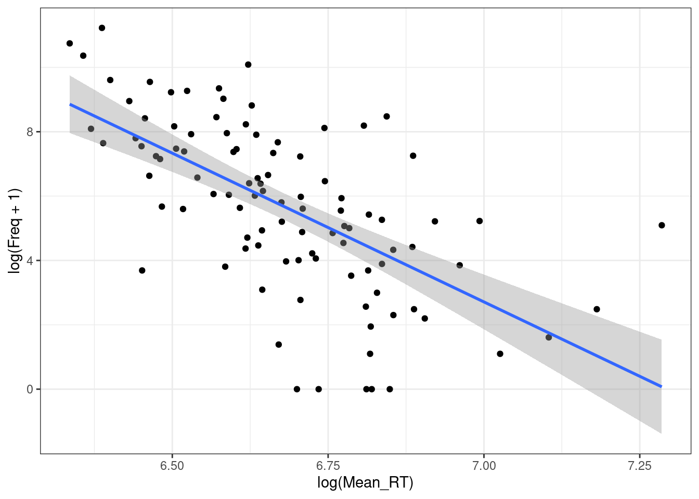
m3 <- summary(lm(log(Mean_RT)~log(Freq+1), data = ldt))
m1$adj.r.squared[1] 0.1174405m2$adj.r.squared[1] 0.336078m3$adj.r.squared[1] 0.3838649Как интерпретировать полученную регрессию с двумя отлогорифмированными значениями?
В обычной линейной регресии мы узнаем отношения между \(x\) и \(y\): \[y_i = \beta_0+\beta_1\times x_i\]
Как изменится \(y_j\), если мы увеличем \(x_i + 1 = x_j\)? \[y_j = \beta_0+\beta_1\times x_j\]
\[y_j - y_i = \beta_0+\beta_1\times x_j - (\beta_0+\beta_1\times x_i) = \beta_1(x_j - x_i)\]
Т. е. \(y\) увеличится на \(\beta_1\) , если \(x\) увеличится на 1. Что же будет с логарифмированными переменными? Как изменится \(y_j\), если мы увеличем \(x_i + 1 = x_j\)?
\[\log(y_j) - \log(y_i) = \beta_1\times (\log(x_j) - \log(x_i))\]
\[\log\left(\frac{y_j}{y_i}\right) = \beta_1\times \log\left(\frac{x_j}{x_i}\right) = \log\left(\left(\frac{x_j}{x_i}\right) ^ {\beta_1}\right)\]
\[\frac{y_j}{y_i}= \left(\frac{x_j}{x_i}\right) ^ {\beta_1}\]
Т. е. \(y\) увеличится на \(\beta_1\) процентов, если \(x\) увеличится на 1 процент.
Логарифмирование — не единственный вид траснформации:
- трансформация Тьюки
shiny::runGitHub("agricolamz/tukey_transform")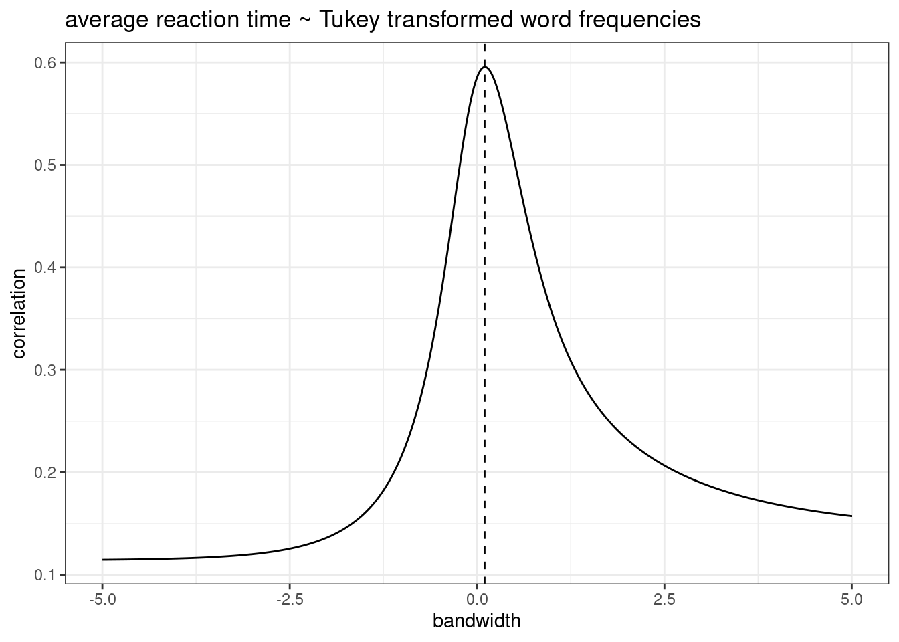
- трансформация Бокса — Кокса
- …
В датасет собрана частотность разных лемм на основании корпуса НКРЯ (Ляшевская and Шаров 2009) (в датасете только значения больше ipm > 10). Известно, что частотность слова связана с рангом слова (см. закон Ципфа). Постройте переменную ранга и визуализируйте связь ранга и логорифма частотности с разбивкой по частям речи. Какие части речи так и не приобрели после трансформации “приемлимую” линейную форму? (я насчитал 5 таких)
10.3 Нормальность распределение остатков
Линейная регрессия предполагает нормальность распределения остатков. Когда связь не линейна, то остатки тоже будут распределены не нормально.
Можно смотреть на первый график используя функцию plot(m1) — график остатков. Интерпретаций этого графика достаточно много (см. статью про это).
Можно смотреть на qqplot:
tibble(res = m1$residuals) %>%
ggplot(aes(res))+
geom_histogram(aes(y = ..density..))+
stat_function(fun = dnorm, args = list(mean = 0, sd = sd(m1$residuals)), color = "red")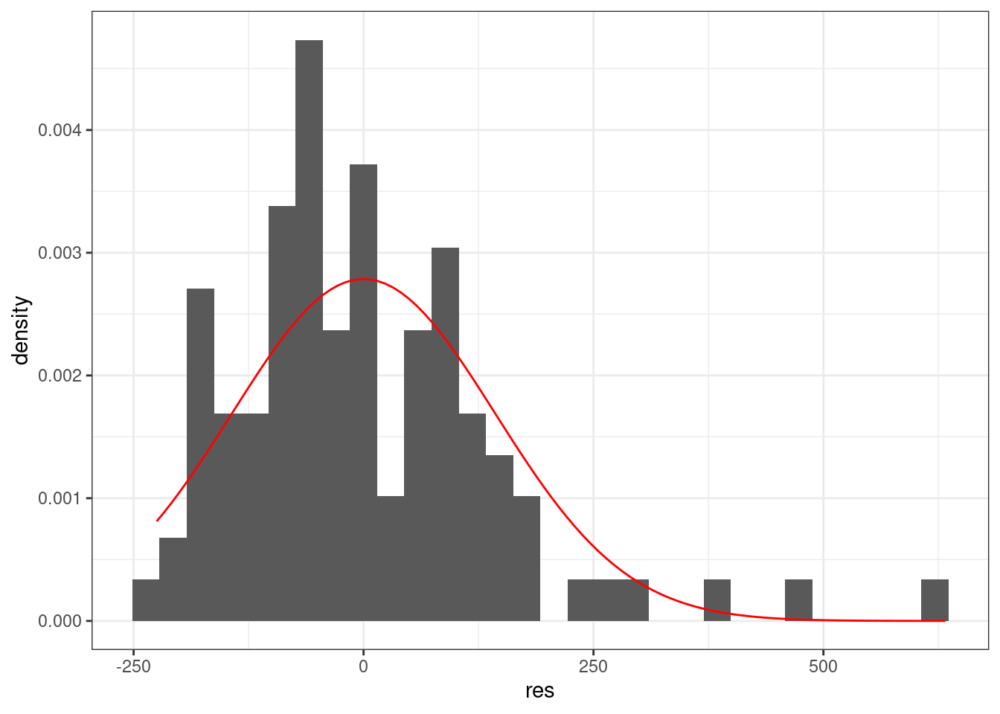
qqnorm(m1$residuals)
qqline(m1$residuals)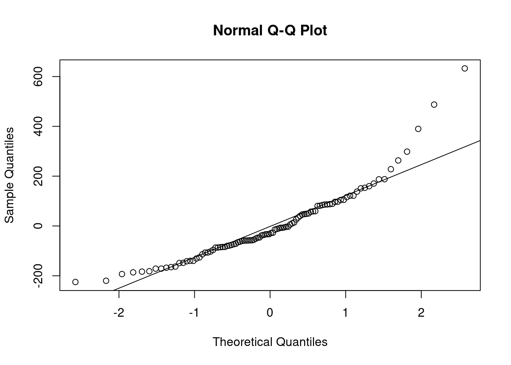
tibble(res = m2$residuals) %>%
ggplot(aes(res))+
geom_histogram(aes(y = ..density..))+
stat_function(fun = dnorm, args = list(mean = 0, sd = sd(m2$residuals)), color = "red")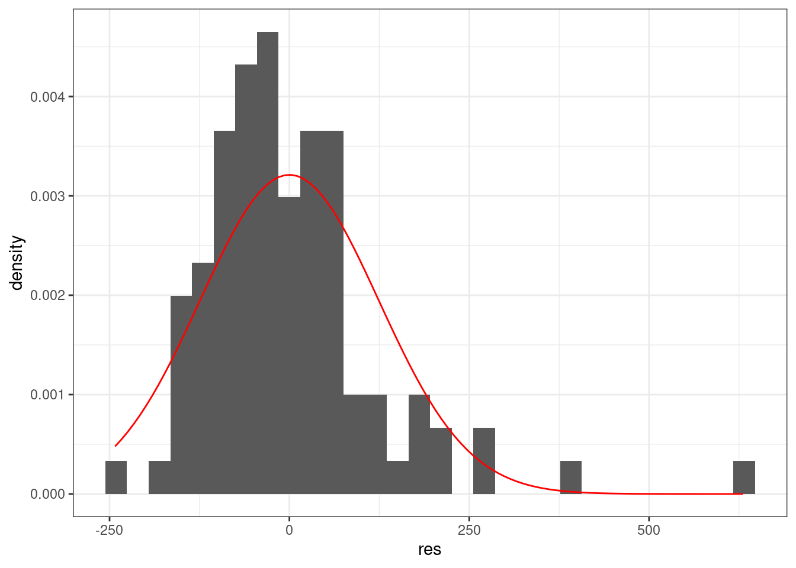
qqnorm(m2$residuals)
qqline(m2$residuals)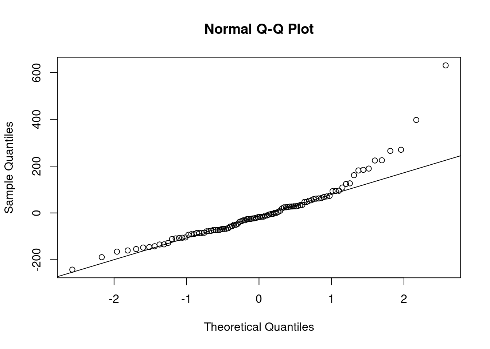
tibble(res = m3$residuals) %>%
ggplot(aes(res))+
geom_histogram(aes(y = ..density..))+
stat_function(fun = dnorm, args = list(mean = 0, sd = sd(m3$residuals)), color = "red")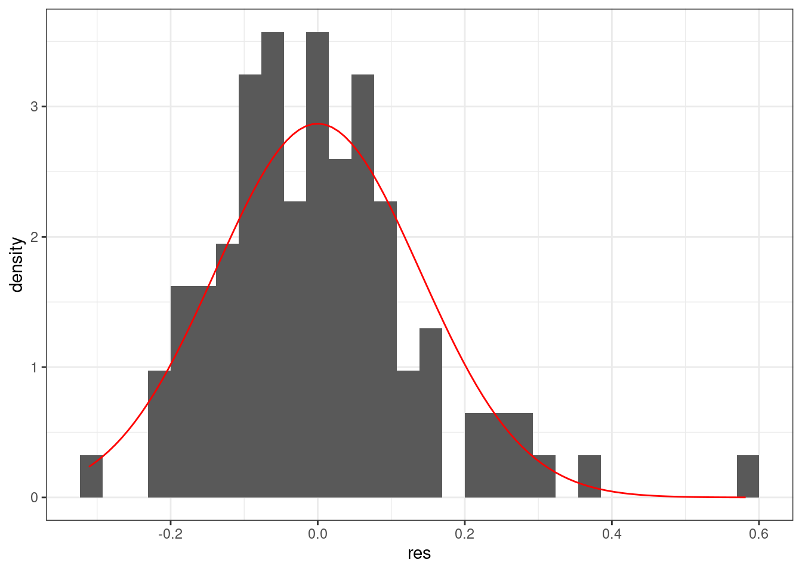
qqnorm(m3$residuals)
qqline(m3$residuals)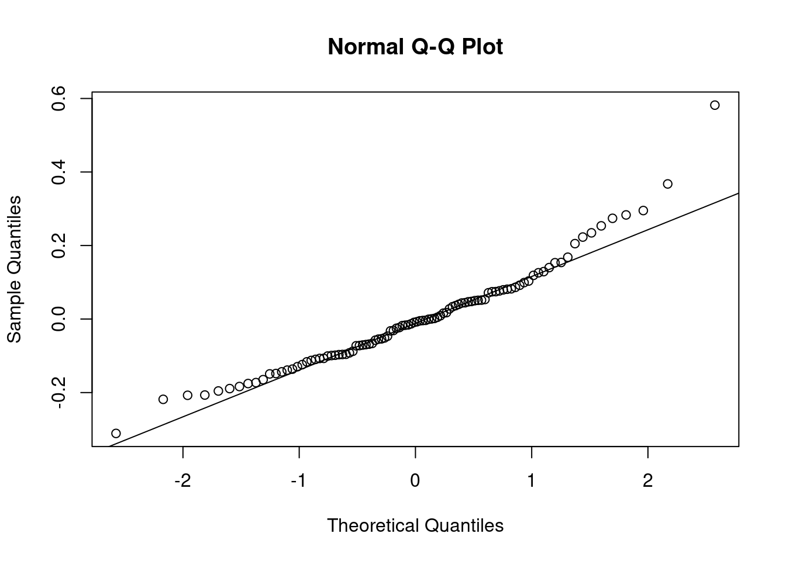
10.4 Гетероскидастичность
Распределение остатков непостоянно (т.е. не гомоскидастичны):
ldt %>%
ggplot(aes(Mean_RT, Freq))+
geom_point()+
theme_bw()
Тоже решается преобазованием данных.
10.5 Мультиколлинеарность
Линейная связь между некоторыми предикторами в модели.
- корреляционная матрица
- VIF (Variance inflation factor),
car::vif()- VIF = 1 (Not correlated)
- 1 < VIF < 5 (Moderately correlated)
- VIF >=5 (Highly correlated)
10.6 Независимость наблюдений
Наблюдения должны быть независимы. В ином случае нужно использовать модель со смешанными эффектами.
10.6.1 Линейная модель со смешанными эффектами
В качестве примера мы попробуем поиграть с законом Хердана-Хипса, описывающий взаимосвязь количества уникальных слов в тексте в зависимости от длины текста. В датасете собраны некоторые корпуса Universal Dependencies (Zeman et al. 2020) и некоторые числа, посчитанные на их основании:
ud <- read_csv("https://raw.githubusercontent.com/agricolamz/2021_da4l/master/data/ud_corpora.csv")
ud %>%
ggplot(aes(n_words, n_tokens))+
geom_point()+
facet_wrap(~corpus, scale = "free")+
geom_smooth(method = "lm", se = FALSE)+
labs(x = "количество слов",
y = "количество уникальных слов",
caption = "данные корпусов Universal Dependencies")
Связь между переменными безусловно линейная, однако в разных корпусах представлена разная перспектива: для каких-то корпусов, видимо, тексты специально нарезались, так что тексты таких корпусов содержат от 30-40 до 50-80 слов, а какие-то оставались не тронутыми. Чтобы показать, что связь есть, нельзя просто “слить” все наблюдения в один котел (см. парадокс Симпсона), так как это нарушит предположение регрессии о независимости наблюдений. Мы не можем включить переменную corpus в качестве dummy-переменной: тогда один из корпусов попадет в интерсепт (станет своего рода базовым уровенем), а остальные будут от него отсчитываться. К тому же не очень понятно, как работать с новыми данными из других корпусов: ведь мы хотим предсказывать значения обобщенно, вне зависимости от корпуса.
При моделировании при помощи моделей со случайными эффектами различают:
- основные эффекты – это те связи, которые нас интересуют, независимые переменные (количество слов, количество уникальных слов);
- случайные эффекты – это те переменные, которые создают группировку в данных (корпус).
В результате моделирования появляется обобщенная модель, которая игнорирует группировку, а потом для каждого значения случайного эффекта генерируется своя регрессия, отсчитывая от обобщенной модели как от базового уровня.
Рассмотрим простейший случай:
library(lme4)
library(lmerTest)
fit1 <- lmer(n_tokens~n_words+(1|corpus), data = ud)
summary(fit1)Linear mixed model fit by REML. t-tests use Satterthwaite's method [
lmerModLmerTest]
Formula: n_tokens ~ n_words + (1 | corpus)
Data: ud
REML criterion at convergence: 10321.5
Scaled residuals:
Min 1Q Median 3Q Max
-7.5271 -0.4947 0.0354 0.5282 8.6350
Random effects:
Groups Name Variance Std.Dev.
corpus (Intercept) 240.608 15.512
Residual 8.844 2.974
Number of obs: 2046, groups: corpus, 6
Fixed effects:
Estimate Std. Error df t value Pr(>|t|)
(Intercept) -4.527634 6.353147 4.958748 -0.713 0.508
n_words 0.827933 0.004418 1992.686553 187.415 <0.0000000000000002 ***
---
Signif. codes: 0 '***' 0.001 '**' 0.01 '*' 0.05 '.' 0.1 ' ' 1
Correlation of Fixed Effects:
(Intr)
n_words -0.079ud %>%
mutate(predicted = predict(fit1)) %>%
ggplot(aes(n_words, n_tokens))+
geom_point()+
facet_wrap(~corpus, scale = "free")+
geom_line(aes(y = predicted), color = "red") +
labs(x = "количество слов",
y = "количество уникальных слов",
caption = "данные корпусов Universal Dependencies")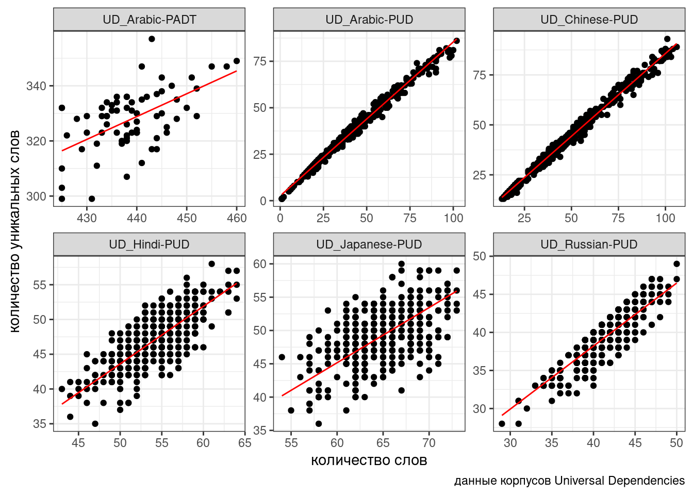
Можно посмотреть на предсказания модели (основные эффекты):
library(ggeffects)
ggeffect(fit1) %>%
plot()$n_words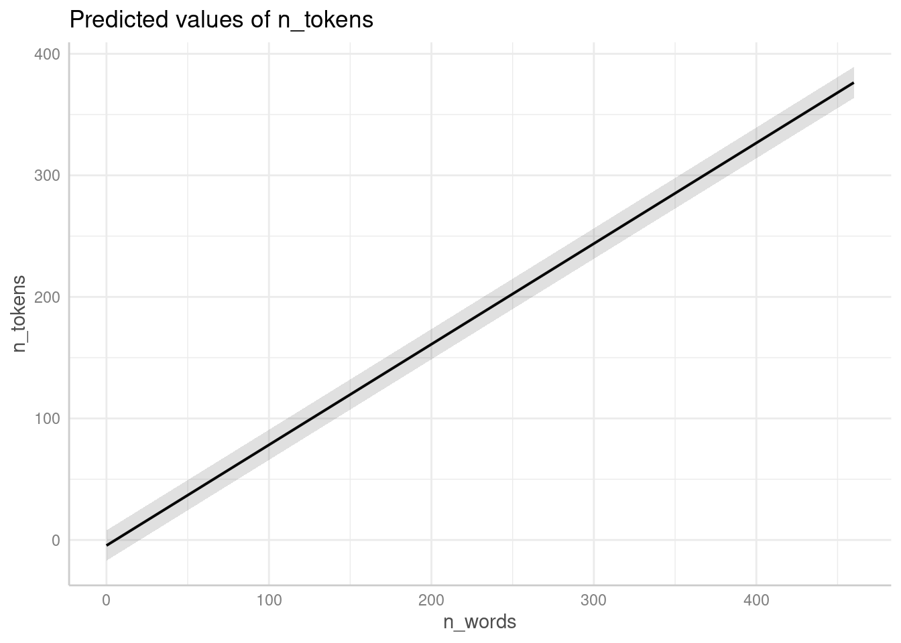
Визуализируйте полученные модели при помощи функции
plot(). Какие ограничения на применение линейной регрессии
нарушается в наших моделях?
plot(fit1)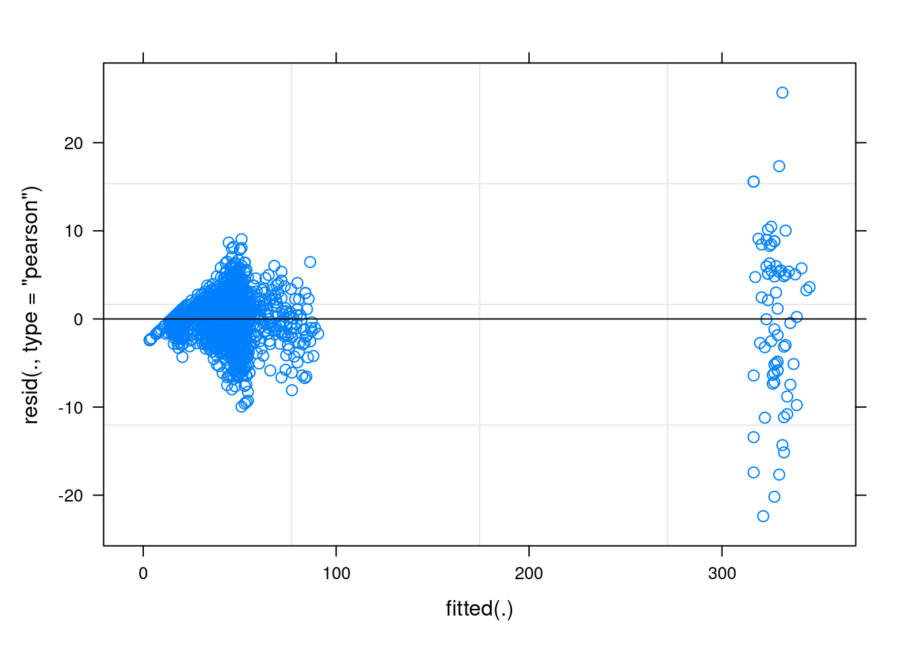
В данном случае мы предполагаем, что случайный эффект имеет случайный свободный член. Т.е. все получающиеся линии параллельны, так как имеют общий угловой коэффициент. Можно допустить большую свободу и сделать так, чтобы в случайном эффекте были не только интерсепт, но и свободный член:
fit2 <- lmer(n_tokens~n_words+(1+n_words|corpus), data = ud)
summary(fit2)Linear mixed model fit by REML. t-tests use Satterthwaite's method [
lmerModLmerTest]
Formula: n_tokens ~ n_words + (1 + n_words | corpus)
Data: ud
REML criterion at convergence: 10275.2
Scaled residuals:
Min 1Q Median 3Q Max
-7.8337 -0.5003 0.0293 0.5172 8.8405
Random effects:
Groups Name Variance Std.Dev. Corr
corpus (Intercept) 4.465751 2.11323
n_words 0.009532 0.09763 -1.00
Residual 8.693060 2.94840
Number of obs: 2046, groups: corpus, 6
Fixed effects:
Estimate Std. Error df t value Pr(>|t|)
(Intercept) 3.23103 0.88937 2.21775 3.633 0.0582 .
n_words 0.80323 0.04005 4.10414 20.056 0.0000299 ***
---
Signif. codes: 0 '***' 0.001 '**' 0.01 '*' 0.05 '.' 0.1 ' ' 1
Correlation of Fixed Effects:
(Intr)
n_words -0.988
optimizer (nloptwrap) convergence code: 0 (OK)
boundary (singular) fit: see help('isSingular')ud %>%
mutate(predicted = predict(fit2)) %>%
ggplot(aes(n_words, n_tokens))+
geom_point()+
facet_wrap(~corpus, scale = "free")+
geom_line(aes(y = predicted), color = "red") +
labs(x = "количество слов",
y = "количество уникальных слов",
caption = "данные корпусов Universal Dependencies")Можно посмотреть на предсказания модели (основные эффекты):
ggeffect(fit2) %>%
plot()$n_words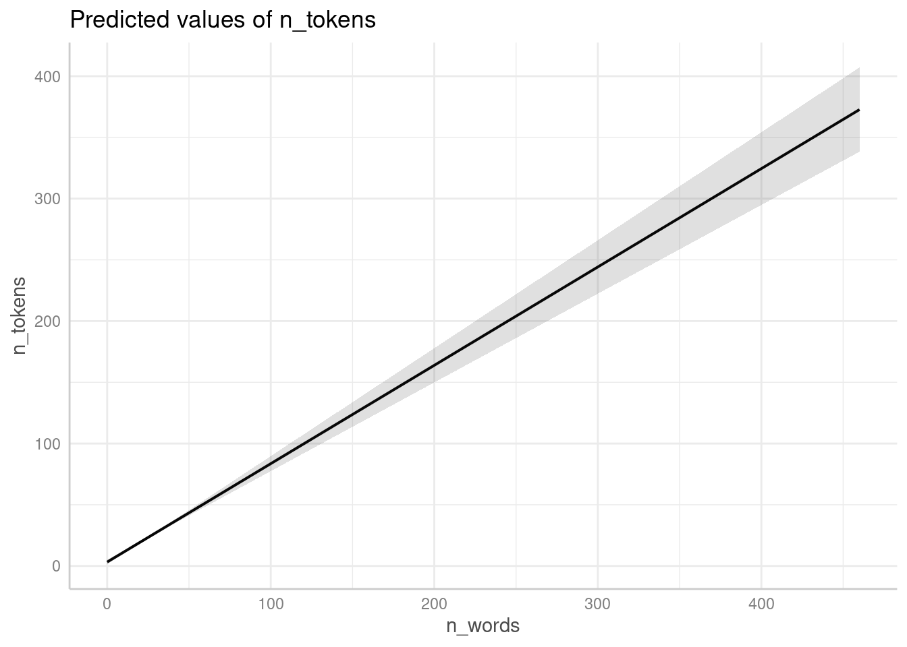
Нарушения все те же:
plot(fit2)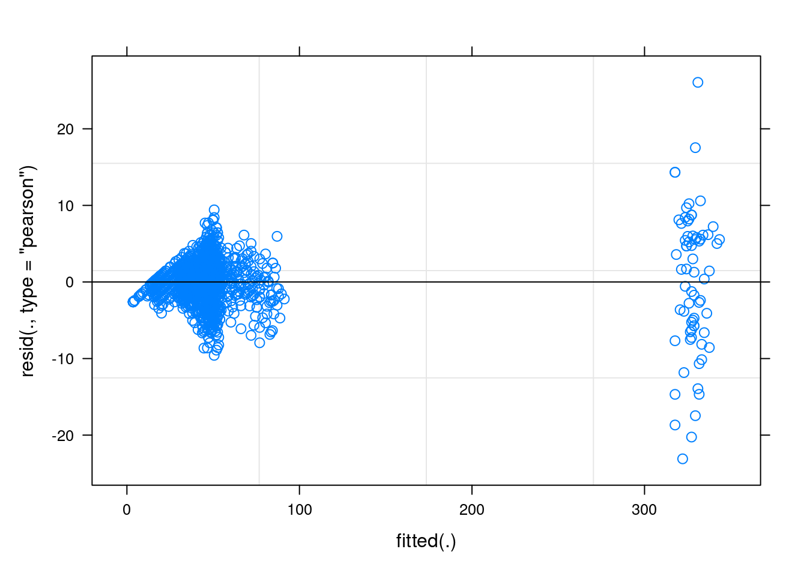
При желании мы можем также построить модель, в которой в случайном эффекте будет лишь угловой коэффициент, а свободный член будет фиксированным:
fit3 <- lmer(n_tokens~n_words+(0+n_words|corpus), data = ud)
summary(fit3)Linear mixed model fit by REML. t-tests use Satterthwaite's method [
lmerModLmerTest]
Formula: n_tokens ~ n_words + (0 + n_words | corpus)
Data: ud
REML criterion at convergence: 10280.9
Scaled residuals:
Min 1Q Median 3Q Max
-7.8107 -0.4933 0.0315 0.5227 8.8209
Random effects:
Groups Name Variance Std.Dev.
corpus n_words 0.004023 0.06343
Residual 8.717996 2.95263
Number of obs: 2046, groups: corpus, 6
Fixed effects:
Estimate Std. Error df t value Pr(>|t|)
(Intercept) 2.64805 0.21627 2043.59791 12.24 < 0.0000000000000002 ***
n_words 0.80427 0.02615 5.16230 30.76 0.000000477 ***
---
Signif. codes: 0 '***' 0.001 '**' 0.01 '*' 0.05 '.' 0.1 ' ' 1
Correlation of Fixed Effects:
(Intr)
n_words -0.132ud %>%
mutate(predicted = predict(fit3)) %>%
ggplot(aes(n_words, n_tokens))+
geom_point()+
facet_wrap(~corpus, scale = "free")+
geom_line(aes(y = predicted), color = "red") +
labs(x = "количество слов",
y = "количество уникальных слов",
caption = "данные корпусов Universal Dependencies")Линии получились очень похожими, но разными:
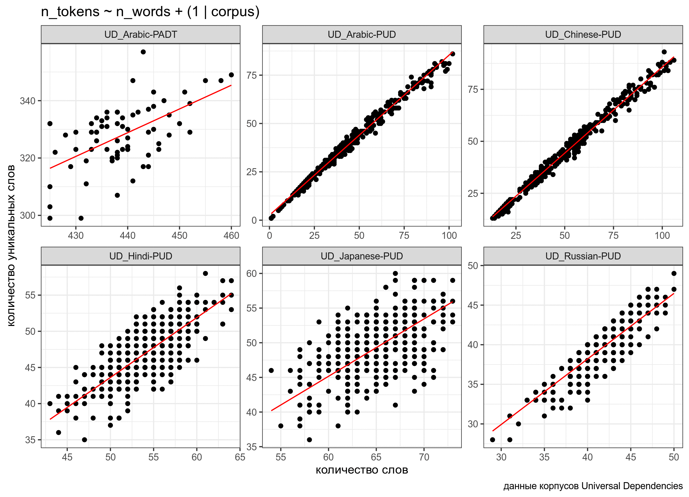
Можно посмотреть на предсказания модели (основные эффекты):
ggeffect(fit3) %>%
plot()$n_words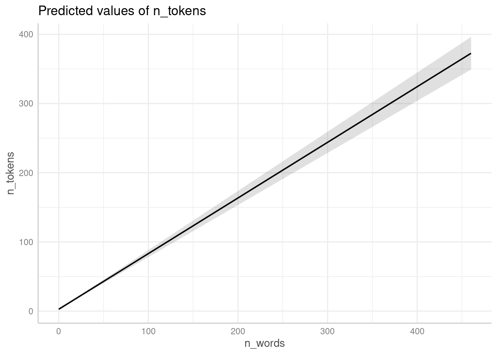
Нарушения все те же:
plot(fit3)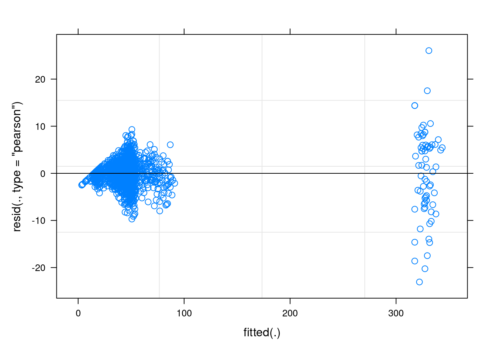
Сравним полученные модели:
anova(fit3, fit2, fit1)Постройте модель со случайными угловым коэффициентом и свободным членом, устранив проблему, которую вы заметили в прошлом задании.
Пользуясь знаниями из предыдущих заданий, смоделируйте связь количества слов и количества существительных. С какими проблемами вы столкнулись?